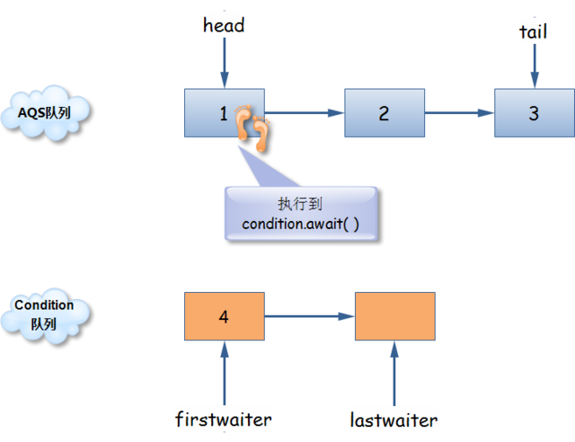
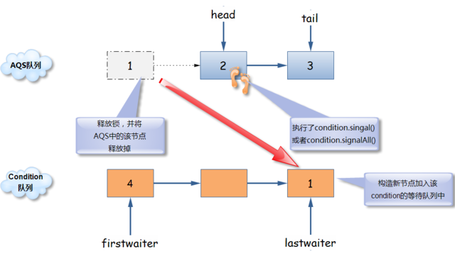
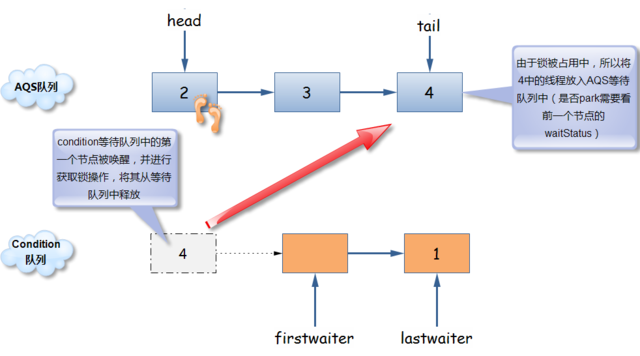

监视器(monitor)机制
正如每个Object都有一个锁，每个Object也有一个等待集合(wait set),它有wait、notify、notifyAll和Thread.interrupt的方法来操作。
同时拥有锁和等待集合的实体，通常被称为监视器(Monitor)。
每个Object的等待集合是由JVM维护的，等待集合中一直存放着那些因为调用对象的wait等方法而被阻塞的线程。只有获得目标Object的同步锁时，才可以调用它的wait等方法，如果条件无法满足，那么调用时会抛出IllegalMonitorStateException。
在并发编程中，monitor是为了保证多线程安全访问一个对象(object)的机制。monitor的特点是所有方法都是互斥访问(mutual exclusion)的。
object.wait标准模式
对于Object.wait()方法，它一定是在一个同步区域中被调用，而且该同步区域锁住了被调用的对象。下边是使用Object.wait()方法的标准模式：
synchronized(obj)
{
while( condition checking)
{
obj.wait();
}
…// Other operations
}
总是要使用wait循环模式来调用wait方法，永远不要在循环的外边调用wait方法。
循环的作用在于在等待的前、后都能测试条件。在等待之前测试条件，如果条件成立的话则跳过等待，这对于确保程序的活性（liveness）是必要的。
条件Condition
Condition 将Object监视器(Monitor)方法wait、notify、notifyAll分解成截然不同的对象，为每个Object提供多个等待集合(wait set)。
同步框架AQS的内部类ConditionObject实现了Condition接口。Condition接口提供了跟Java语言内置monitor机制类似的接口：await、signal、signalAll。
每个ConditionObject实例内部维护一个ConditionQueue，该队列的元素跟AQS的WaitQueue一样，都是Node对象。
  
/**
* 使用锁和条件实现生产者消费者问题
*/
public class ConditionTest {
private Lock shecudleLock = new ReentrantLock(true);
private Condition fullC = shecudleLock.newCondition();
private Condition emptyC = shecudleLock.newCondition();
private int num = 0;
public void put(){
shecudleLock.lock();
try {
while(num>=10){
System.out.println("满了"+Thread.currentThread().getName()+"休眠");
fullC.await();
System.out.println("没满"+Thread.currentThread().getName()+"醒了");
}
++num;
emptyC.signal();
} catch (Exception e) {
e.printStackTrace();
} finally{
shecudleLock.unlock();
System.out.println(Thread.currentThread().getName()+"放进一个还剩"+num);
}
}
public void take(){
shecudleLock.lock();
try {
while(num==0){
System.out.println("空了"+Thread.currentThread().getName()+"休眠");
emptyC.await();
System.out.println("有了"+Thread.currentThread().getName()+"醒了");
}
--num;
fullC.signal();
} catch (Exception e) {
e.printStackTrace();
} finally{
shecudleLock.unlock();
System.out.println(Thread.currentThread().getName()+"拿掉一个还剩"+num);
}
}
public static void main(String[] args) {
final ConditionTest test = new ConditionTest();
Thread t1 = new Thread( new Runnable(){
@Override
public void run() {
while(true)
test.take();
}
});
Thread t2 = new Thread( new Runnable(){
@Override
public void run() {
while(true)
test.take();
}
});
Thread t3 = new Thread( new Runnable(){
@Override
public void run() {
while(true)
test.put();
}
});
t1.setName("线程1");
t1.start();
t2.setName("线程2");
t2.start();
t3.setName("线程3");
t3.start();
}
}
处理中断(interrupt)
关于处理线程中断， ConditionObject的await()/signal()/signalAll()等方法符合JSR 133: Java Memory Model and Thread Specification Revision中规定的语义：
- 如果中断在signal之前发生，那么await必须在重新获得synchronizer的锁之后，抛出InterruptedException；
- 如果中断发生在signal之后发生，那么await必须要设定当前线程的中断状态，并且不能抛出InterruptedException。
日期：2012-11-27、2012-11-29
参考资料：深入浅出 Java Concurrency (9): 锁机制 part 4、JUC 基础内容概述、JAVA.util.concurrent 同步框架(翻译二)、Java Concurrent (2)、WIKI--Monitor (synchronization)